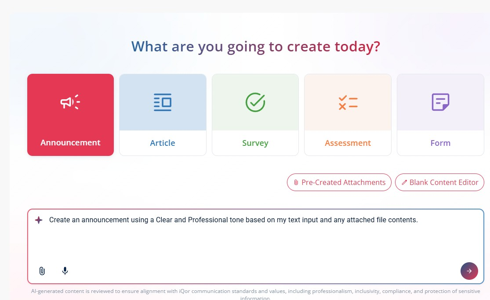
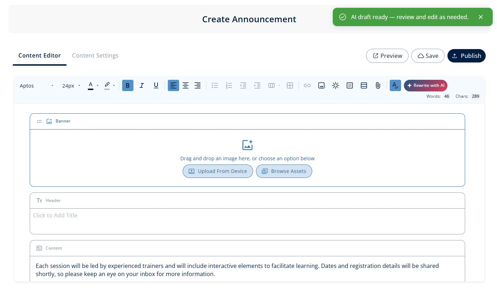

01 Overview
iQor CMS is the internal content management system built to feed every editorial channel within iQor's digital infrastructure. It serves as the single authoring environment for the announcement feeds, news posts, alerts, and rich-media content that employees encounter daily across the iQor HUB.
The platform gives content editors and communications managers a structured, role-aware environment to draft, schedule, and publish content without requiring engineering support. Every piece published through the CMS reaches the HUB's announcement feed in real time, giving iQor a direct, reliable channel to communicate with its global workforce of 44,000+ employees.
02 The Problem
Before the CMS existed, internal communications at iQor relied on manual, fragmented processes. Content editors had no dedicated tooling. Announcements were routed through email chains to engineering teams, formatted in ad hoc documents, and pushed to internal channels through a patchwork of manual steps with no audit trail and no scheduling capability.
This created a bottleneck at every publication cycle. Critical updates were delayed hours waiting for engineering availability. Corrections required reopening the same manual pipeline. And because there was no structured taxonomy, content quickly became unsearchable and impossible to manage at scale. This became a growing problem as iQor's internal communications volume increased alongside its workforce.
Design Thinking Process
How Might We
"How might we give content editors full visibility and control over their publishing workflow — without requiring a single engineering ticket?"
User Persona
Sofia R.
Communications Manager
3 years at iQor · Corporate Comms
Goals
- Publish critical updates immediately
- Know exactly where each piece is in the pipeline
- Target content to specific regions / roles
Pain Points
- Waits hours for engineering to publish urgent news
- No audit trail — can't tell what's published or when
- Content sent to wrong audiences without targeting
"I shouldn't need to file a ticket every time I want to tell 44,000 people something important."
03 Process
The design process started with the people closest to the problem: the content editors and communications managers who lived inside the existing broken workflow. We conducted structured interviews with eight editorial team members across two regional offices, mapping their end-to-end publishing process and identifying where delays, errors, and workarounds were most concentrated.
The interviews surfaced a consistent pattern: the most critical failures weren't about missing features, they were about missing structure. Editors didn't know where their content was in the approval chain, couldn't see when something had been published, and had no way to preview how a post would render in the HUB before it went live. The design challenge became clear: build a system centered on visibility, control, and confidence.
With the research synthesized, we moved into information architecture. The system needed to support multiple content types such as short announcements, long-form articles, rich media posts, and time-sensitive alerts, while keeping the authoring interface unified and simple. We mapped out the content model first, then designed the UI around it.
Wireframe rounds were validated directly with the editorial team in two testing cycles. The first round exposed a critical assumption we had gotten wrong: editors needed the scheduling and preview workflow accessible from the same screen, not separated into different steps. That insight reshaped the composition of the editor view before a single high-fidelity frame was produced.
Publishing User Flow
Content editor publishes an announcement
Supported Content Types
04 Solution
The iQor CMS delivers a single-screen composition environment where editors can write, format, attach media, set audience targeting by role or region, and schedule publication, all without leaving the editor view. A live preview panel renders the content exactly as it will appear in the HUB feed, eliminating the uncertainty that drove the previous manual approval loop.
A structured content calendar gives communications managers a timeline view of all scheduled and published posts, with drag-and-drop rescheduling and inline status indicators. The role-based permissions model ensures that junior editors can draft and preview content freely, while final publication requires approval from a designated manager, creating a lightweight governance layer without adding friction to the authoring flow.

Content calendar view and role-based publishing workflow
Content taxonomy and tagging were built into the model from day one, enabling the HUB's announcement feed to filter and surface posts based on employee role, department, and location. This meant that a facilities update for the Phoenix office wouldn't reach agents in Manila. That level of precision was something the previous email-based system made structurally impossible.

Announcement module, used to create and broadcast internal alerts and updates to the entire workforce or specific audience segments.

Content editor, the main authoring interface for creating structured content including articles, surveys, assessments, and forms, with AI-assisted drafting built in.
05 Video Ilustrativo
The following video shows the iQor CMS running in production. The platform integrates AI assistance directly into the authoring flow, helping editors generate and refine content faster without leaving the interface. The overall design reflects a modern, focused approach to internal tooling, where every interaction is intentional and the interface stays out of the way of the work.
iQor CMS in production, AI-assisted content creation platform